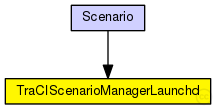
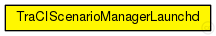

This documentation is released under the Creative Commons license
This documentation is released under the Creative Commons licenseExtends the TraCIScenarioManager for use with sumo-launchd.py and SUMO.
Connects to a running instance of the sumo-launchd.py script to automatically launch/kill SUMO when the simulation starts/ends.
All other functionality is provided by the TraCIScenarioManager.
See the Veins website for a tutorial, documentation, and publications .
Author: Christoph Sommer, David Eckhoff
See also: TraCIMobility
See also: TraCIScenarioManager
The following diagram shows usage relationships between types. Unresolved types are missing from the diagram. Click here to see the full picture.
The following diagram shows inheritance relationships for this type. Unresolved types are missing from the diagram. Click here to see the full picture.
| Name | Type | Description |
|---|---|---|
| Scenario | network | (no description) |
| Name | Type | Default value | Description |
|---|---|---|---|
| debug | bool | false |
emit debug messages? |
| connectAt | double | 0s |
when to connect to TraCI server (must be the initial timestep of the server) |
| firstStepAt | double | -1s |
when to start synchronizing with the TraCI server (-1: immediately after connecting) |
| updateInterval | double | 1s |
time interval of hosts' position updates |
| moduleType | string | "inet.nodes.wireless.WirelessHostSimplified" |
module type to be used in the simulation for each managed vehicle |
| moduleName | string | "host" |
module name to be used in the simulation for each managed vehicle |
| moduleDisplayString | string | "i=misc/node2;is=vs;r=0,,#707070,1" |
module displayString to be used in the simulation for each managed vehicle |
| host | string | "localhost" |
sumo-launchd.py server hostname |
| port | int | 9999 |
sumo-launchd.py server port |
| launchConfig | xml |
launch configuration to send to sumo-launchd.py |
|
| seed | int | -1 |
seed value to set in launch configuration, if missing (-1: current run number) |
| autoShutdown | bool | true |
Shutdown module as soon as no more vehicles are in the simulation |
| margin | int | 25 |
margin to add to all received vehicle positions |
| roiRoads | string | "" |
which roads (e.g. "hwy1 hwy2") are considered to consitute the region of interest, if not empty |
| roiRects | string | "" |
which rectangles (e.g. "0,0-10,10 20,20-30,30) are considered to consitute the region of interest, if not empty |
| penetrationRate | double | 1 |
the probability of a vehicle being equipped with Car2X technology |
| numVehicles | int | 0 | |
| useRouteDistributions | bool | false | |
| vehicleRngIndex | int | 0 |
index of the RNG stream to be used, all random numbers concerning the managed vehicles |
| Name | Value | Description |
|---|---|---|
| display | i=block/network2 | |
| class | Veins::TraCIScenarioManagerLaunchd |
// // Extends the TraCIScenarioManager for use with sumo-launchd.py and SUMO. // // Connects to a running instance of the sumo-launchd.py script // to automatically launch/kill SUMO when the simulation starts/ends. // // All other functionality is provided by the TraCIScenarioManager. // // See the Veins website <a href="http://veins.car2x.org/"> for a tutorial, documentation, and publications </a>. // // @author Christoph Sommer, David Eckhoff // // @see TraCIMobility // @see TraCIScenarioManager // simple TraCIScenarioManagerLaunchd { parameters: @display("i=block/network2"); @class(Veins::TraCIScenarioManagerLaunchd); bool debug = default(false); // emit debug messages? double connectAt @unit("s") = default(0s); // when to connect to TraCI server (must be the initial timestep of the server) double firstStepAt @unit("s") = default(-1s); // when to start synchronizing with the TraCI server (-1: immediately after connecting) double updateInterval @unit("s") = default(1s); // time interval of hosts' position updates string moduleType = default("inet.nodes.wireless.WirelessHostSimplified"); // module type to be used in the simulation for each managed vehicle string moduleName = default("host"); // module name to be used in the simulation for each managed vehicle string moduleDisplayString = default("i=misc/node2;is=vs;r=0,,#707070,1"); // module displayString to be used in the simulation for each managed vehicle string host = default("localhost"); // sumo-launchd.py server hostname int port = default(9999); // sumo-launchd.py server port xml launchConfig; // launch configuration to send to sumo-launchd.py int seed = default(-1); // seed value to set in launch configuration, if missing (-1: current run number) bool autoShutdown = default(true); // Shutdown module as soon as no more vehicles are in the simulation int margin = default(25); // margin to add to all received vehicle positions string roiRoads = default(""); // which roads (e.g. "hwy1 hwy2") are considered to consitute the region of interest, if not empty string roiRects = default(""); // which rectangles (e.g. "0,0-10,10 20,20-30,30) are considered to consitute the region of interest, if not empty double penetrationRate = default(1); //the probability of a vehicle being equipped with Car2X technology int numVehicles = default(0); bool useRouteDistributions = default(false); int vehicleRngIndex = default(0); // index of the RNG stream to be used, all random numbers concerning the managed vehicles }
This documentation is released under the Creative Commons license